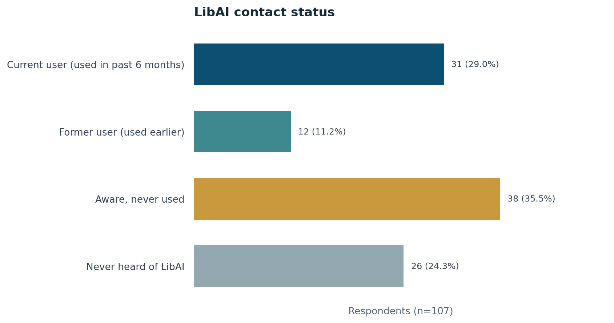
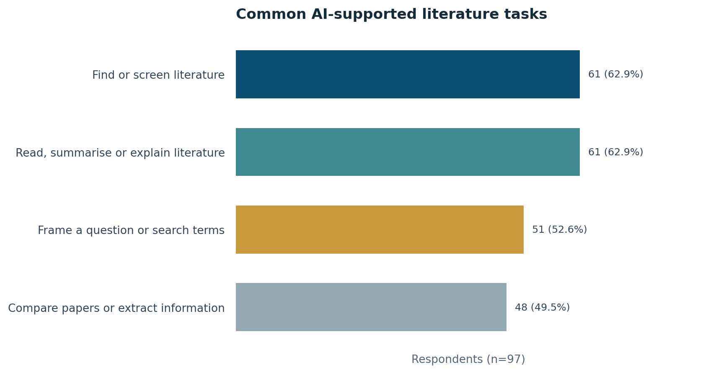

Users and context
Postgraduate literature work
Students use AI to find, screen, compare and understand academic literature. Alongside LibAI, general-purpose generative AI tools outside the university are also common alternatives.
ADS401 Evaluation Methods and Statistics Group J
We surveyed XJTLU postgraduates about LibAI adoption, non-use reasons and desired capabilities. Those findings informed a comparison of LibAI, DeepSeek and GPT-6 Luna on literature retrieval and source understanding, using 107 eligible survey responses and 20 task participants.
Source verification and accuracy were the leading improvement priorities: 54 of 107 respondents (50.5%) chose one of them as their top priority. LibAI also scored strongly on source verifiability in the task comparison, making traceability a strength to preserve and refine. Interview feedback commonly called for faster responses; this is a reported user need, considered alongside the task results. See the findings and recommendations.
01 / Project at a glance
This project examines whether XJTLU postgraduate students use LibAI for literature work, what they want from a library AI service, and how LibAI performs on common literature tasks.
We first surveyed 107 postgraduates about LibAI use, non-use reasons, AI-supported literature tasks and improvement priorities. We then compared LibAI with ChatGPT (GPT-6 Luna configuration) and DeepSeek on literature retrieval and abstract understanding, and used interview feedback to add context to the results.
Respondents placed particular value on reliable, verifiable sources and accuracy. In the retrieval task, LibAI matched GPT-6 Luna on mean quality and source verifiability. Interview feedback also identified faster responses as a desired improvement. Together, the findings suggest preserving and improving source traceability while treating response speed as a service need for further evaluation.
40.2%
had ever used LibAI (43 of 107)
59.8%
had never used LibAI (64 of 107)
50.5%
selected source verification or accuracy as their top improvement
19.30 / 20
mean retrieval score for both LibAI and GPT-6 Luna
02 / Problem, motivation and questions
Users and context
Students use AI to find, screen, compare and understand academic literature. Alongside LibAI, general-purpose generative AI tools outside the university are also common alternatives.
Evaluation problem
Survey responses show who has used LibAI and why some students have not tried it.
Improvement question
Respondents highlighted source reliability, answer accuracy, resource coverage and the practical experience of using LibAI.
Research questions
03 / Background and related work
AI-assisted literature work combines retrieval and interpretation. A retrieval tool should find papers that meet the task requirements, return accurate sources and provide details students can verify. A reading tool should preserve the source content without adding unsupported information or omitting important details.
Walters and Wilder examined citations in literature reviews generated by ChatGPT-3.5 and GPT-4. They found fabricated references alongside real references containing substantive errors. This shows why researchers should verify that cited works exist and that their bibliographic metadata are accurate [1]. Their findings concern earlier model versions and do not establish LibAI's current error rate.
In four evidence-synthesis case studies, Lau and Golder found that Elicit had higher precision but lower average sensitivity than the original reviews. They concluded that, in those cases, Elicit could supplement but not replace comprehensive searching [2]. This supports evaluating both task fit and source verification.
A 2026 feasibility study of Elicit's data extraction found that accuracy and reproducibility varied across prompts and test articles, and recommended manual checking [3]. We therefore combine blind output scoring with user ratings. A response may appear useful while omitting a key result or adding unsupported information.
These studies inform our evaluation measures but do not predict LibAI's performance. This study examines whether XJTLU postgraduates know about and choose the library tool, what functions they want, and how it performs on tasks drawn from their reported literature workflow.
04 / Study design and methods
The questionnaire moved from students’ general AI use to their specific experience with LibAI. It asked which AI tools they used for literature-related work and which tasks they used them for; whether they knew about or had used LibAI; and, based on their experience, what factors encouraged or hindered use. It also asked respondents to rate desired functions and select the improvement they would prioritise first. Responses about common literature tasks informed task selection, while the other AI tools reported by respondents informed comparator selection. The bilingual questionnaire targeted XJTLU postgraduate students. Of 124 raw submissions, six did not consent and 11 were not XJTLU postgraduates, leaving 107 eligible responses.
Findings are descriptive and exploratory. The survey used non-probability convenience/snowball recruitment.
Three questionnaire findings shaped the task choice, comparison systems and scoring focus.
Survey question · Q6
Among 97 recent AI users, literature search/screening and reading/summarising were each selected by 61 respondents.
Experiment design
The two task areas represent common literature work reported in the questionnaire.
Survey question · Q7
ChatGPT was named by 32 respondents and DeepSeek by 31; two named LibAI (n=97).
Experiment design
The experiment used GPT-6 Luna as the ChatGPT configuration, alongside DeepSeek and LibAI.
Survey question · Q28
Verifiable sources were selected by 28 respondents and accuracy by 26 (n=107).
Experiment design
The rubric assessed source verifiability, correctness, relevance, completeness and clarity.
The survey determined what to examine; the experiment compared outputs on those selected tasks and criteria.
To assess the common literature tasks identified in the survey, 20 XJTLU postgraduates used LibAI, DeepSeek and GPT-6 Luna (ChatGPT configuration) to complete a literature-retrieval task and a fixed abstract-comprehension task. Each participant completed six trials, producing 120 answers for scoring. Participants were interviewed after the tasks. The results briefly compare the three systems on these tasks.
Participants recorded each system’s specific response. The group then conducted a second blind review of the recorded answers to cross-check the results. Reviewers assessed correctness, relevance, completeness, source verifiability and clarity/actionability using the 0–20 scoring scale.
All 20 participants’ task answers were included in output scoring. Complete seven-point satisfaction and expectation ratings were available for 15 participants; the other five records were incomplete for this measure and were not included in the rating analysis. Participation in the questionnaire and experiment required informed consent, and recording required separate consent. This page reports aggregate findings only and does not display raw responses or identifying information.
05 / Survey findings
These results use the latest cleaned questionnaire data. Of 124 raw submissions, 107 met the eligibility requirements. AI-task questions were answered by 97 respondents who had recently used AI; questions about reasons for non-use were answered by 64 respondents who had never used LibAI.
Survey results
Each chart shows its denominator. AI task use is among recent AI users; non-use reasons are among respondents who had never used LibAI.




RQ1 / Use and awareness
Of 107 respondents, 31 were current LibAI users (29.0%), 12 had used it previously but not in the past six months (11.2%), and 64 had never used it (59.8%). Thus, 43 respondents (40.2%) had tried LibAI, while 81 (75.7%) had heard of it. Among 97 recent AI users, literature search or screening and reading or summarising were each reported by 61 respondents (62.9%).
Most-used AI tool
Among the 97 recent AI users, 32 named ChatGPT as their main AI tool, 31 named DeepSeek, and two named LibAI. This indicates that students use AI for literature work, while LibAI is rarely their main tool.
RQ2 / Perceptions among LibAI users
Among current and former LibAI users, ratings of LibAI’s help across literature tasks were moderately positive, with item means from 3.60 to 3.83 out of 5 (valid n=41–42 per item). Clear, well-structured responses received the highest mean (3.83/5). Help with judging a paper’s relevance and with understanding or summarising papers each averaged 3.76/5. Ratings of usability were closer to the scale midpoint: ease of learning averaged 3.14/5, clarity of guidance 3.26/5, and access convenience 3.32/5.
Source checking averaged 3.05/5 and fit with existing literature workflows 2.90/5 (n=40 for each). In a separate item, users’ concern about insufficient sources or evidence averaged 3.88/5 (n=43). Together, these responses point to workflow fit and verifiable evidence as areas needing attention.
Valid responses
There were 43 current or former LibAI users in the cleaned sample. Item-level valid responses varied from 40 to 43 because some users skipped individual questions or marked them not applicable.
RQ3 / Barriers and priorities
Among 64 respondents who had never used LibAI, 30 said external AI already met their literature needs (46.9%). Twenty-four did not know which academic tasks LibAI could help with (37.5%), 24 lacked an opportunity to try it (37.5%), and 22 did not know how to access it (34.4%). Sixteen (25.0%) reported concerns about accuracy or sources.
Among 43 current or former users, commonly reported limitations included insufficient database or resource coverage (18, 41.9%), irrelevant or inaccurate results (17, 39.5%), and external AI already meeting their needs (17, 39.5%). Sixteen users (37.2%) also reported difficulty with complex or mixed-language requests, while 15 (34.9%) reported insufficient source or evidence information.
Improvement priorities
As a single top priority, 28 respondents selected verifiable sources and evidence (26.2%), and 26 selected accuracy and fewer fabricated answers (24.3%). Together, these accounted for 54 of 107 choices (50.5%). Database coverage followed with 13 choices (12.1%).
06 / Task experiment
Across the two tasks, LibAI and GPT-6 Luna achieved similar mean scores. On literature retrieval, both averaged 19.30/20, compared with 13.75/20 for DeepSeek. On abstract comprehension, scores were close to the maximum: 19.85/20 for LibAI, 19.90/20 for GPT-6 Luna and 19.50/20 for DeepSeek; no pairwise differences were statistically significant. These results indicate that LibAI performed comparably to GPT-6 Luna on the tasks tested.
| System | Retrieval mean (SD) | Retrieval full marks | Comprehension mean (SD) | Comprehension full marks |
|---|---|---|---|---|
| DeepSeek | 13.75 (1.83) | 0 / 20 | 19.50 (0.69) | 12 / 20 |
| GPT-6 Luna (ChatGPT) | 19.30 (1.63) | 14 / 20 | 19.90 (0.45) | 19 / 20 |
| LibAI | 19.30 (0.86) | 11 / 20 | 19.85 (0.49) | 18 / 20 |
Task evidence
Quality scores cover all 20 participants. Experience ratings use 15 complete cases.


Retrieval
The overall within-participant comparison differed across systems (Friedman Q=33.74, Kendall's W=.84, adjusted p<.001). LibAI and GPT-6 Luna each averaged 5.55 points above DeepSeek; both paired comparisons had adjusted p<.001. LibAI and GPT-6 Luna tied in 11 of 20 participant comparisons (adjusted p=1.000). Their source-verifiability means were both 3.75/4; DeepSeek's was 2.20/4.
Comprehension
Forty-nine of 60 answers received full marks. The overall test detected a smaller system difference (Friedman Q=8.00, W=.20, adjusted p=.0119), but none of the pairwise comparisons was significant. This ceiling limits the task's ability to distinguish systems.
User experience
Among 15 complete cases, retrieval satisfaction differed across systems (Friedman Q=18.55, W=.62, adjusted p<.001), as did expectation-confirmation ratings (Q=18.62, W=.62, adjusted p<.001). GPT-6 Luna had the highest retrieval satisfaction mean (6.13/7); LibAI had the highest expectation-confirmation rating (6.20/7). Comprehension ratings did not differ significantly.
Interview feedback
Interview feedback commonly mentioned a wish for LibAI to respond faster. This reflects users’ experience and expectations and complements the task scores; it is considered as a service-improvement need.
07 / Discussion and recommendations
The survey records what students want; the task comparison shows performance on two controlled tasks. Sources and accuracy led survey priorities, yet LibAI scored strongly on source verifiability and retrieval quality in the tested topic. Make this capability visible and validate it more broadly; do not claim a proven general accuracy defect.
Priority 1 / Product experience
Show title, authors, year, DOI and a working source link together, and make the evidence behind a claim easy to inspect. This responds to the survey's leading priorities; the task study scored LibAI 3.75/4 for source verifiability. Preserve this tested strength and validate it on more topics before proposing a system-wide quality fix.
Priority 2 / Adoption
Give students a clear entry route and a low-risk demonstration for finding and checking a paper. This addresses 22 respondents who did not know how to access LibAI, 24 who did not know suitable tasks and 24 who lacked a chance to try it. Since 30 never-users said external AI met their needs, explain LibAI's library-specific value rather than promising generic AI features.
Priority 3 / Coverage
Coverage was a top improvement choice for 13 respondents. The experiment's one search topic cannot measure database coverage across subjects. Compare LibAI with a human-checked reference set for several disciplines and report missed relevant records as well as correct returns.
Priority 4 / Next evaluation
Interview feedback commonly raised faster responses as a desired improvement. Treat this as a user-reported need, and measure time to a usable, verified answer in a future evaluation before making claims about which system is faster.
The next evaluation should extend testing across more participants, disciplines and LibAI functions, and directly measure response time alongside answer quality.
08 / Transparency and references
This page contains aggregate results only; the cleaned workbook, raw export, consent forms, interviews and trial-level scores are not included. The 8 November manual is the pre-experiment plan; the later study had 20 participants and lacks order and timing records.
The earlier n=94 survey report is superseded by the current cleaned n=107 file and is no longer linked from this page. Short-duration and straight-line-rating flags remain in the cleaned sample.
Fengyi Guo, Jingyu Li, Liyutong Gao and Yuyang Long shared study design, questionnaire logic, data interpretation, report review and experiment planning, according to the group contribution record. All members remain responsible for checking the analysis and final report.
Participation was voluntary and consent-based; experiment recording required separate consent. The supplied materials do not show an ethics approval reference or retention schedule; add verified details before submission. OpenAI Codex assisted with report restructuring, evidence-linked drafting and web formatting. The coursework sheet limits AI to non-substantive use; the group must confirm this scope with the module leader before submission and follow the required disclosure rule.
Trial-level data were not available in the supplied files for independent recalculation of the reported experiment results.